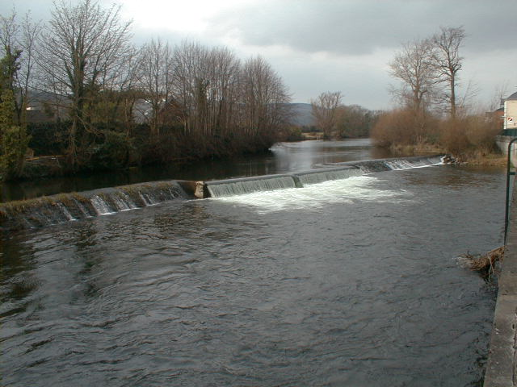

The Quay
The Quay
The quay plays an important role in clomel. In midieval times the quays stretched the river bank beyond the south walls of the town.
These walls were levelled to allow the quays to be extended around 1765. During the latter part of 18th century and early 19th century
Clonmel developed into one of the most inportant commercial and industrail inland towns in Irealnd. most of the grain in Tipperary and
a large amount of it from munster were transported by barge from Clonmel Which proved to be an efficent and quick means of transport.

the river suir navigation company formed between 1836 to 1841 and the depending of the river between Clonmel and carrick meant theat
lager vessels (up to 200 tons) could dock at Clonmel. After a long struggle with rail transport in 1920 the barges ceased to sail and
the towpath became public walkways. During the town drainage scheme in 1992, the quays were rebuilt and the original towpaths lost.
However the bollards for tying the barges remain.In 1832 there were 23 mills, mostly owned by the Quakers. Murphy's stout was brewed
in the town from 1798to 1924 the builbing was then used as a shoe factory until recent times.
© 2004 history Of Clonmel